보고서 · 2026-08-31
비주얼 노벨 편집기를
비주얼 노벨 편집기를
쉬운 말로 설명하면
컨셉 문서를 화면 그대로 찍어서, 그림 12장과 짧은 설명으로 정리했습니다. 처음 보는 사람도 따라올 수 있게 썼습니다.
컨셉 문서를 화면 그대로 찍어서, 그림 12장과 짧은 설명으로 정리했습니다. 처음 보는 사람도 따라올 수 있게 썼습니다.
비주얼 노벨(선택지가 있는 이야기 게임)을 쓰는 편집기입니다. 글을 쓰는 화면이 소설처럼 생겼습니다.
화면은 네 개지만 파일은 하나입니다. 어느 화면에서 고쳐도 같은 파일이 바뀝니다.
컨셉 문서 한 편이 완성됐습니다. 코드는 아직 없고, 큰 질문 하나가 열려 있습니다.
이 보고서의 그림은 모두 컨셉 문서를 실제로 렌더해서 찍은 스크린샷입니다. 그림을 누르면 원본 크기로 열립니다.
같은 이야기를 네 가지 방법으로 보여주는 것뿐입니다. 진짜 원본은 디스크에 있는 파일 하나입니다.
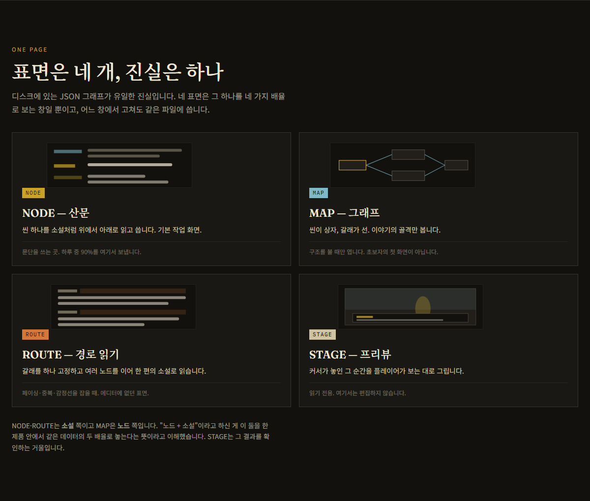
| 화면 | 무슨 화면인가 | 언제 쓰는가 |
|---|---|---|
| NODE | 장면 하나를 소설처럼 위에서 아래로 읽고 쓰는 화면 | 글을 쓸 때. 기본 화면입니다. |
| MAP | 장면이 상자, 선택지가 선으로 보이는 지도 | 이야기 전체 구조를 볼 때 |
| ROUTE | 갈래 하나를 골라 처음부터 끝까지 이어 읽는 화면 | 흐름이 매끄러운지 볼 때 |
| STAGE | 지금 커서가 있는 순간을 플레이어 눈으로 보는 화면 | 화면에 어떻게 나올지 확인할 때 |
글 쓰는 창, 지도 창, 이어 읽기 창, 미리보기 창. 이렇게 네 개입니다. 창을 바꿔도 내용은 같습니다. 지도에서 상자를 옮기든 글 창에서 대사를 고치든, 저장되는 파일은 하나입니다.
설명마다 다른 예를 들면 헷갈립니다. 그래서 비 오는 플랫폼 장면 하나로 처음부터 끝까지 갑니다.
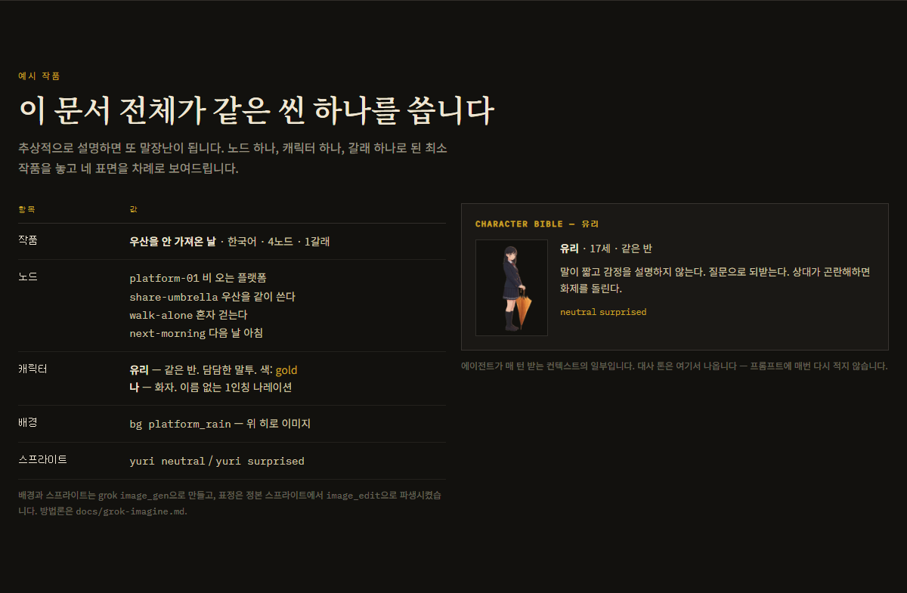
이야기는 짧습니다. 비 오는 플랫폼에서 유리를 만나고, 우산을 같이 쓰거나 혼자 걸어갑니다. 그리고 다음 날 아침으로 이어집니다. 장면은 네 개입니다.
설명용 샘플 이야기입니다. 실제 배경 그림과 캐릭터 그림을 넣어서, 목업이 아니라 진짜 화면처럼 보이게 했습니다.
대사와 지시문이 한 줄씩 위에서 아래로 흐릅니다. 표 칸에 채우는 느낌이 아니라 원고를 쓰는 느낌입니다.
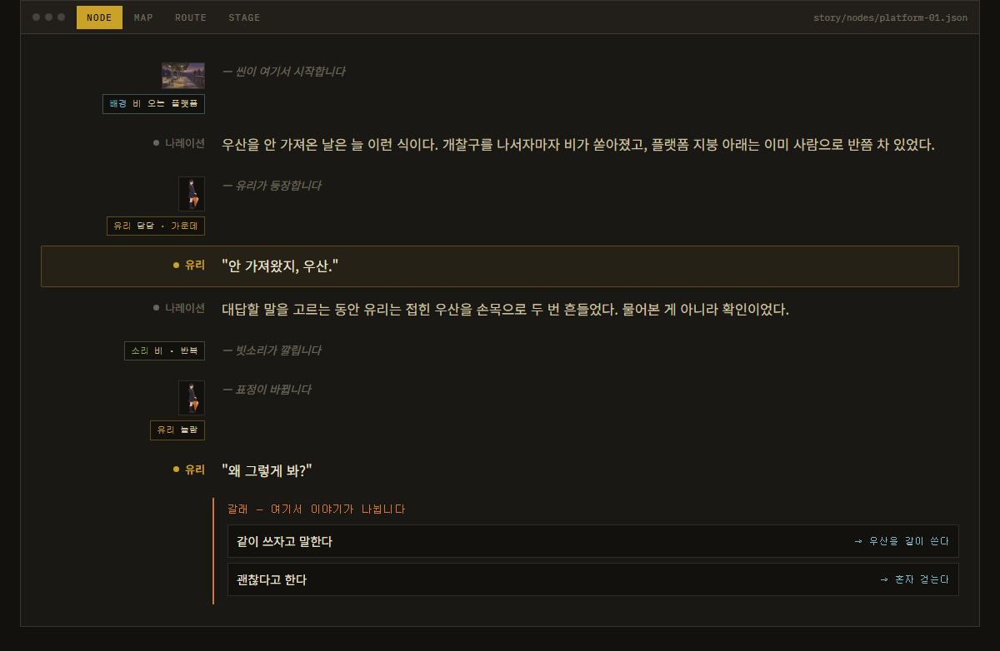
블록 하나가 게임 동작 하나입니다. 대사 한 줄, 표정 바꾸기 하나, 배경 바꾸기 하나. 이 규칙을 어기지 않는 것이 이 화면의 계약입니다.
워드에서 대본 쓰는 것과 비슷합니다. 다른 점은 한 줄 한 줄이 게임이 실제로 실행하는 명령이라는 것입니다. 그래서 왼쪽에 지금 무대 상태가 계속 따라옵니다.
카드 화면을 따로 만들지 않았습니다. 같은 화면을 촘촘하게 보거나 느슨하게 보는 차이입니다.
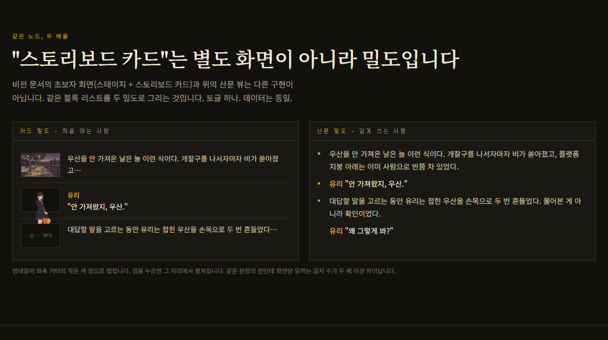
지도 앱의 확대/축소와 같습니다. 축소하면 그림이 커지고 훑어보기 좋아집니다. 확대하면 글이 촘촘해지고 쓰기 좋아집니다. 화면을 갈아타는 게 아니라 손잡이 하나를 돌리는 것입니다.
이 문서에서 가장 중요한 부분입니다. 눈에 보이는 글, 저장되는 파일, 게임 코드가 정확히 한 줄씩 대응합니다.
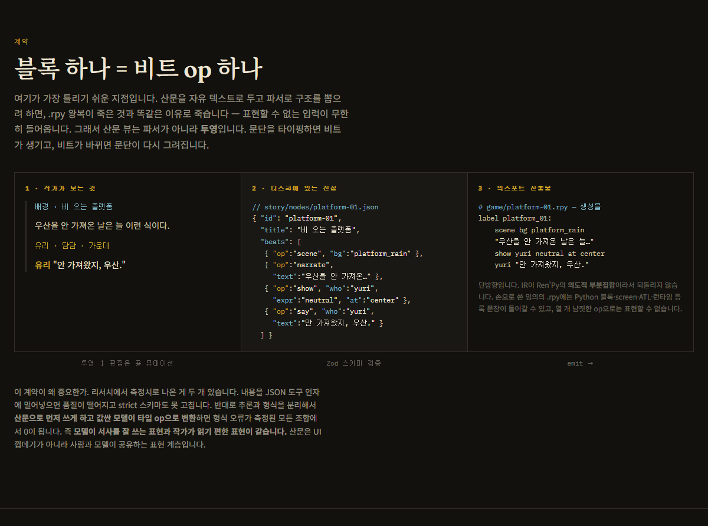
화면에서 셋째 줄을 지우면 파일에서도 셋째 항목이 지워지고, 게임 코드에서도 셋째 줄이 사라집니다. 중간에 번역이나 추측이 끼지 않습니다.
이게 지켜지면 되돌리기, 자동 저장, 협업, AI 수정 제안이 모두 쉬워집니다. 어긋나기 시작하면 전부 어려워집니다.
전체 구조를 한눈에 봅니다. 선 위의 글씨는 그 갈래를 타는 선택지 문구입니다.
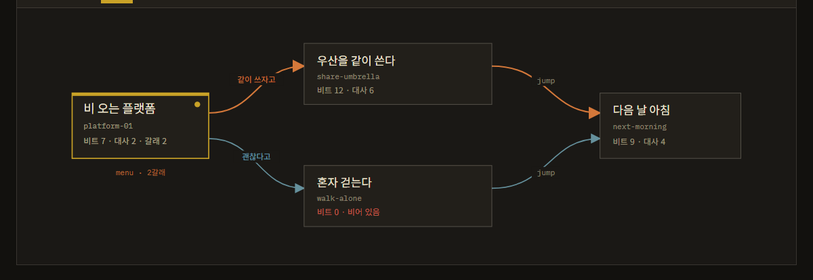
지하철 노선도입니다. 역이 장면이고 선이 선택지입니다. 여기서 상자를 클릭하면 그 장면의 NODE 화면으로 들어갑니다.
갈래를 하나 고정하면, 여러 장면이 한 편의 글처럼 끊기지 않고 이어집니다.
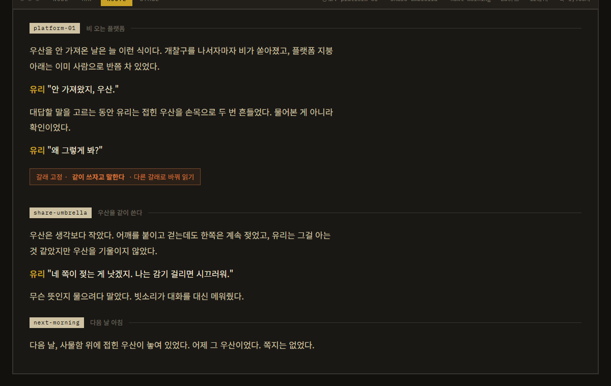
독자가 실제로 읽게 될 순서 그대로 원고를 읽어보는 화면입니다. 문장이 어색한 곳, 감정이 툭 끊기는 곳이 여기서 드러납니다.
제 생각에는 이 화면이 이 제품의 핵심입니다. 왜 이걸 소설처럼 만들어야 하는지가 설명 없이 전달됩니다.
커서가 놓인 순간이 게임에서 어떻게 보이는지 그대로 띄워줍니다.
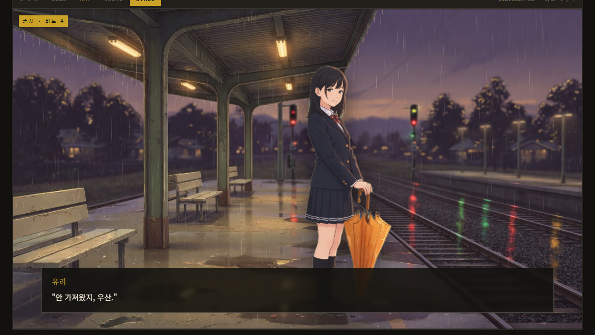
미리보기입니다. 글을 쓰다가 커서를 옮기면 이 화면도 같이 그 순간으로 움직입니다. 게임을 따로 실행할 필요가 없습니다.
AI가 원고를 몰래 바꾸지 않습니다. 바꿀 내용을 카드로 보여주고, 작가가 받거나 버립니다.
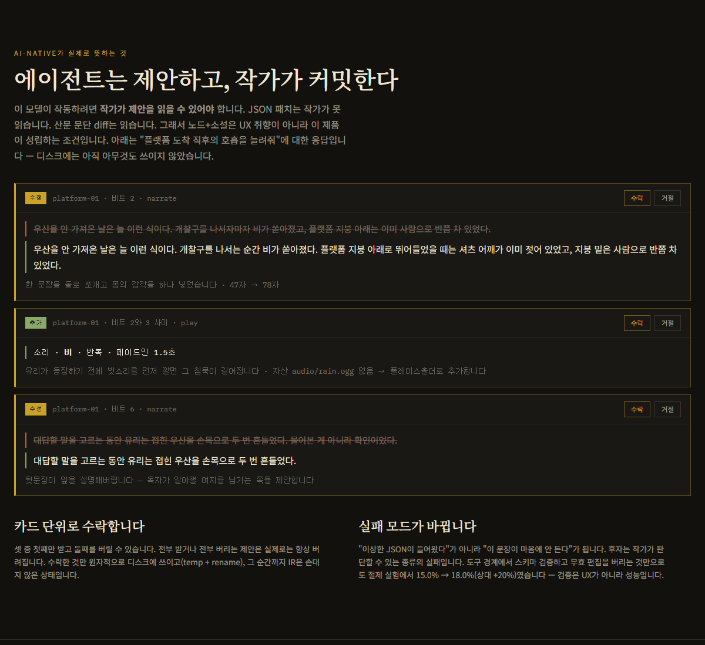
맞춤법 검사기가 "이렇게 고칠까요?" 물어보는 것과 같습니다. 다만 대상이 문장 한 줄이 아니라 장면 구조까지입니다.
이게 가능한 이유는 06번의 규칙입니다. 파일이 줄 단위로 깔끔하니까, 바뀌는 부분만 정확히 집어서 보여줄 수 있습니다.
이 결정 하나가 파일 구조와 지도 모양을 같이 바꿉니다. 그래서 아직 열어뒀습니다.
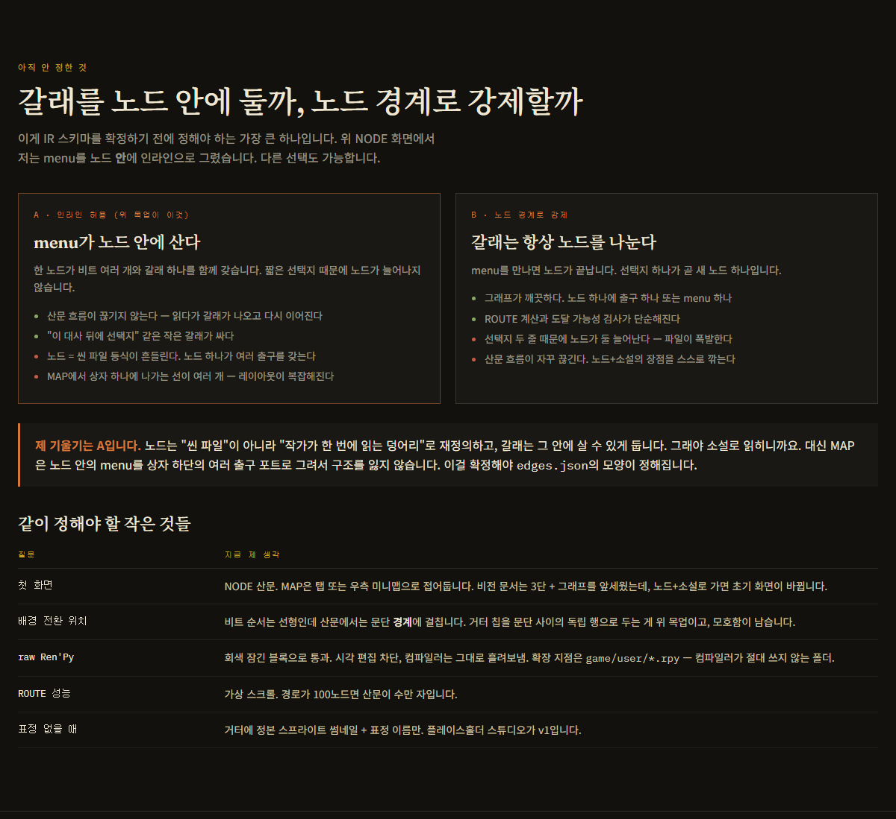
지금 기울기는 A안입니다. 읽는 맛을 지키는 쪽입니다. 지도가 복잡해지는 문제는 상자 아래쪽에 출구를 여러 개 그려서 풀 생각입니다.
이걸 정해야 저장 파일의 모양이 정해집니다. 코드를 쓰기 전에 결정해야 하는 항목입니다.
새 낱말을 최소한만 만들었습니다. 여섯 개입니다.
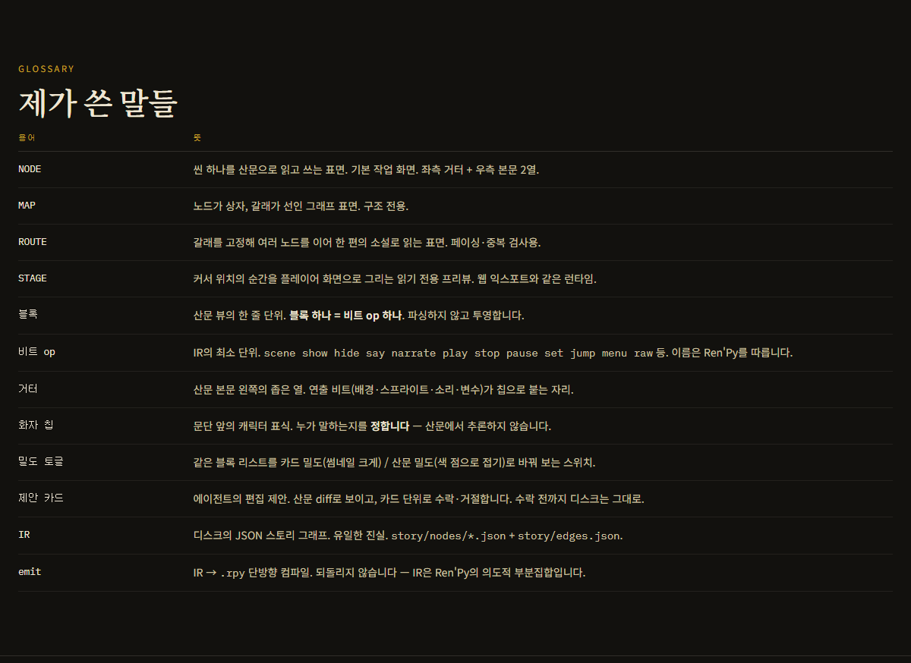
문서를 처음부터 끝까지 렌더해서 훑었고, 결함 다섯 개를 찾아 고쳤습니다.
예시 작품 표의 장면 개수가 틀렸습니다.
"3노드"라고 적혀 있었지만 실제로 나열된 장면은 네 개 → 4노드로 고침
MAP 화면 제목의 선 개수가 그림과 안 맞았습니다.
"5 edges"로 적혀 있었지만 그림상 선은 네 개 → 4 edges로 고침
카드/산문 비교 설명이 사실과 달랐습니다.
"문단 수는 같고"라고 했지만 왼쪽 3블록, 오른쪽 4문단 → "같은 분량의 씬인데"로 고침
NODE 목업이 문서 자신의 규칙을 어기고 있었습니다.
표정 변경과 대사를 한 블록에 합쳐 그려놨는데, 다음 섹션이 "블록 하나 = 동작 하나"를 계약으로 못 박습니다 → 두 블록으로 분리
지도의 선 위 글씨가 상자를 파고들고, 썸네일에 초록 배경이 남아 있었습니다.
선 라벨은 짧게 줄이고 겹치는 부분에 배경판을 깔아 가림. 썸네일 네 곳은 배경을 지운 그림으로 교체
숫자가 그림과 안 맞는 곳 세 군데, 문서가 자기 규칙을 어긴 곳 한 군데, 보기 흉한 곳 두 군데를 고쳤습니다. 전부 실제로 렌더해서 눈으로 확인했습니다.
| 순서 | 할 일 | 왜 지금 |
|---|---|---|
| 1 | 선택지를 장면 안에 둘지 밖에 둘지 결정 | 저장 파일 모양이 여기서 정해집니다. 코드보다 먼저입니다. |
| 2 | 파일 형식(스키마) 초안 작성 | 1번이 정해지면 바로 쓸 수 있습니다. |
| 3 | NODE 화면만 먼저 실제로 만들기 | 기본 화면이고, 06번 규칙이 진짜 지켜지는지 여기서 판명됩니다. |
| 4 | 파일에서 게임 코드로 내보내기 시험 | 3단 대응이 말뿐인지 실제인지 확인하는 가장 싼 방법입니다. |
STAGE와 ROUTE는 NODE와 같은 파일을 읽는 다른 창이라서, NODE가 서면 비교적 빠르게 붙습니다. MAP은 배치 계산이 들어가서 마지막이 좋습니다.